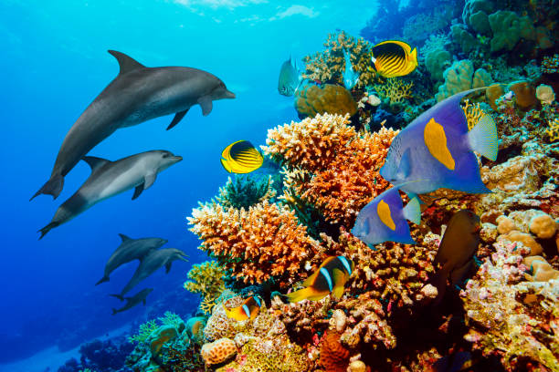
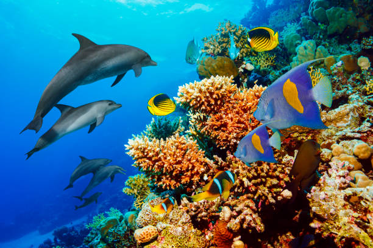

Hallo! Perkenalkan nama saya Michelle dari kelas 93 nomor absen 27, pembuat website ini. Tugas ini merupakan tugas kolaborasi antara IPS, PPKN, dan TIK. Dalam tugas tersebut, para siswi SMP Santa Ursula Jakarta kelas 9 diminta untuk membuat suatu website berisi materi IPS tentang SDGs dan PPKN yang berisi tentang bentuk kerjasama. Tujuan utama dari tugas kolaborasi adalah untuk menilai sedalam apa pemahaman para siswi pada materi IPS, PPKN, dan TIK.
SDGs (Sustainable Development Goals) merupakan seperangkat 17 tujuan pembangunan global yang ditetapkan oleh Perserikatan Bangsa-Bangsa (PBB) pada tahun 2015 sebagai bagian dari Agenda 2030 for Sustainable Development. Tujuan ini dirancang untuk mengakhiri kemiskinan, meningkatkan kualitas hidup, memastikan kesetaraan, serta melindungi lingkungan secara berkelanjutan. SDGs mencakup aspek sosial, ekonomi, dan lingkungan yang saling berkaitan, sehingga seluruh negara didorong untuk bekerja sama dalam mewujudkan pembangunan yang inklusif dan berkelanjutan.
Kerja sama merupakan suatu proses ketika dua pihak atau lebih berkolaborasi dengan menggabungkan kemampuan, sumber daya, serta tanggung jawab untuk mencapai tujuan yang sama secara lebih efektif. Setiap individu atau kelompok yang terlibat memiliki peran masing-masing dan berkoordinasi secara terarah agar hasil yang dicapai lebih optimal dibandingkan jika dilakukan secara individual. Kerja sama juga menekankan komitmen, komunikasi yang baik, serta saling mendukung demi tercapainya tujuan bersama.